| Nama | : | Zulka Ridho Mahmudi |
| NIM | : | 707012500018 |
| Kelas | : | D4 SIKC 49-04 |
| Mata Kuliah | : | Pemrograman Aplikasi Berbasis Web |
| Dosen Pengampu | : | Diash Firdaus |
auth.Project ini tidak menggunakan Laravel Breeze. Authentication dibuat manual di dalam folder app/Http/Controllers/Auth. Dengan demikian, tidak ada routes/auth.php, tidak ada dependensi Breeze, dan tidak diperlukan build Vite untuk halaman authentication maupun LaporBanjir. Ketiadaan Breeze dan Vite juga membuat Node.js/NPM tidak wajib dijalankan pada project ini.
TA_Modul6.db_laporanbanjir.127.0.0.1.3307.Isi file .env yang digunakan:
APP_NAME=Laravel
APP_URL=http://localhost:8000
DB_CONNECTION=mysql
DB_HOST=127.0.0.1
DB_PORT=3307
DB_DATABASE=db_laporanbanjir
DB_USERNAME=root
DB_PASSWORD=
SESSION_DRIVER=database
Konfigurasi tersebut menghasilkan empat tabel utama:
| Tabel | Fungsi |
|---|---|
users |
Menyimpan akun petugas. |
password_reset_tokens |
Menyimpan token reset password bawaan Laravel. |
sessions |
Menyimpan session login karena SESSION_DRIVER=database. |
laporan |
Menyimpan laporan banjir dari warga. |
composer install..env dan sesuaikan koneksi database.php artisan key:generate.composer install
cp .env.example .env
php artisan key:generate
php artisan migrate
php artisan db:seed
Untuk penyiapan ulang dari kondisi bersih, digunakan:
php artisan migrate:fresh --seed
Perintah tersebut menghasilkan:
Tabel sessions wajib ada karena project memakai SESSION_DRIVER=database. Tanpa tabel tersebut, status login tidak dapat dipertahankan.
Project ini memakai jalur authentication manual tanpa Laravel Breeze. Pilihan ini diambil karena tugas LaporBanjir pada Modul 6 meminta fitur register, login, dan logout dibuat tanpa Breeze, sehingga alur validasi, hashing, session, dan middleware dapat terlihat langsung.
File utama yang digunakan:
app/Http/Controllers/Auth/RegisterController.phpapp/Http/Controllers/Auth/LoginController.phpapp/Http/Controllers/HomeController.phproutes/web.phpresources/views/auth/login.blade.phpresources/views/auth/register.blade.phpresources/views/layouts/app.blade.phpModul 6 memang juga membahas Laravel Breeze pada subbab 6.4.5, tetapi subbab 6.4.10 menyediakan jalur manual. Untuk tugas LaporBanjir, jalur manual yang dipakai agar tidak terjadi tumpang tindih route dan view antara Breeze dan authentication buatan sendiri.
app/Http/Controllers/Auth/RegisterController.php.create() menampilkan form registrasi.store() memvalidasi input, membuat user, lalu langsung login.public function store(Request $request)
{
$request->validate([
'name' => ['required', 'string', 'max:255'],
'email' => ['required', 'string', 'email', 'max:255', 'unique:users'],
'password' => ['required', 'confirmed', Rules\Password::defaults()],
]);
$user = User::create([
'name' => $request->name,
'email' => $request->email,
'password' => Hash::make($request->password),
]);
event(new Registered($user));
Auth::login($user);
return redirect()->route('dashboard');
}
unique:users mencegah email ganda.confirmed mewajibkan input password_confirmation.Hash::make() mengubah password menjadi hash bcrypt.Auth::login() langsung membuat session login.Pada tampilan, halaman ini diberi label Registrasi Petugas dan catatan bahwa warga tidak perlu mendaftar.
app/Http/Controllers/Auth/LoginController.php.create() menampilkan form login.store() memverifikasi email dan password.destroy() menghapus session login.public function store(Request $request)
{
$credentials = $request->validate([
'email' => ['required', 'email'],
'password' => ['required'],
]);
if (Auth::attempt($credentials, $request->remember)) {
$request->session()->regenerate();
return redirect()->intended('dashboard');
}
return back()->withErrors([
'email' => 'Email atau password yang Anda masukkan salah.',
]);
}
public function destroy(Request $request)
{
Auth::logout();
$request->session()->invalidate();
$request->session()->regenerateToken();
return redirect('/');
}
Auth::attempt() mencocokkan email dan password dengan hash di database.remember mengaktifkan fitur Remember Me.session()->regenerate() mencegah session fixation.intended() mengarahkan pengguna ke halaman tujuan atau dashboard.Halaman login diberi label Login Petugas agar alurnya jelas berbeda dari form warga.
File: routes/web.php.
Route::get('/', function () {
return view('welcome');
});
Route::get('/laporbanjir', [LaporanController::class, 'form'])->name('laporbanjir.form');
Route::post('/laporbanjir/simpan', [LaporanController::class, 'simpan'])->name('laporbanjir.simpan');
Route::get('/register', [RegisterController::class, 'create'])->name('register');
Route::post('/register', [RegisterController::class, 'store']);
Route::get('/login', [LoginController::class, 'create'])->name('login');
Route::post('/login', [LoginController::class, 'store']);
Route::post('/logout', [LoginController::class, 'destroy'])->name('logout');
Route::middleware('auth')->group(function () {
Route::get('/dashboard', [HomeController::class, 'dashboard'])->name('dashboard');
Route::get('/profile', [HomeController::class, 'profile'])->name('profile');
Route::get('/daftar-laporan', [LaporanController::class, 'daftar'])->name('laporan.daftar');
});
Ringkasan route:
| Method | URI | Name | Controller | Akses |
|---|---|---|---|---|
| GET | / |
- | Closure | Publik |
| GET | /laporbanjir |
laporbanjir.form |
LaporanController@form |
Publik |
| POST | /laporbanjir/simpan |
laporbanjir.simpan |
LaporanController@simpan |
Publik |
| GET | /register |
register |
RegisterController@create |
Publik |
| POST | /register |
- | RegisterController@store |
Publik |
| GET | /login |
login |
LoginController@create |
Publik |
| POST | /login |
- | LoginController@store |
Publik |
| POST | /logout |
logout |
LoginController@destroy |
Publik |
| GET | /dashboard |
dashboard |
HomeController@dashboard |
auth |
| GET | /profile |
profile |
HomeController@profile |
auth |
| GET | /daftar-laporan |
laporan.daftar |
LaporanController@daftar |
auth |
Halaman dashboard, profil, dan daftar laporan dilindungi middleware auth. Jika dibuka tanpa login, pengguna diarahkan ke route login. Route login wajib memiliki nama login agar redirect middleware bekerja.
Pada implementasi ini, route login dan register tidak dibungkus middleware guest. Pengguna yang sudah login masih dapat membuka halaman login/register secara langsung. Pembatasan utama tetap berada pada middleware auth untuk halaman petugas.
resources/views/layouts/app.blade.php.@auth dan @else.POST dengan @csrf.@auth
<a href="{{ route('dashboard') }}">Dashboard</a>
<a href="{{ route('laporan.daftar') }}">Daftar Laporan</a>
<a href="{{ route('profile') }}">Profil Petugas</a>
<form method="POST" action="{{ route('logout') }}">
@csrf
<button type="submit">Logout</button>
</form>
@else
<a href="{{ route('laporbanjir.form') }}">Lapor Banjir</a>
<a href="{{ route('login') }}">Login Petugas</a>
<a href="{{ route('register') }}">Registrasi Petugas</a>
@endauth
@yield('content') menjadi tempat isi halaman.Halaman welcome juga ditambahkan tautan Lapor Banjir, Login Petugas, dan Registrasi Petugas pada bagian navigasi. Halaman awal masih menggunakan tampilan bawaan Laravel, tetapi pintu masuk warga dan petugas sudah dipisahkan.
app/Http/Controllers/HomeController.php.dashboard() menampilkan resources/views/dashboard.blade.php.profile() menampilkan resources/views/profile.blade.php.public function dashboard()
{
return view('dashboard');
}
public function profile()
{
return view('profile');
}
Dashboard menampilkan pesan konfirmasi bahwa pengguna sudah login. Halaman profil menampilkan data pengguna yang sedang login:
<p>Name: {{ Auth::user()->name }}</p>
<p>Email: {{ Auth::user()->email }}</p>
<p>Account created: {{ Auth::user()->created_at->diffForHumans() }}</p>
Auth::user() mengambil data pengguna dari session.diffForHumans() menampilkan waktu pembuatan akun dalam format yang mudah dibaca.auth.database/seeders/PetugasSeeder.php.unique() mencegah email ganda.Hash::make().$faker = Faker::create('id_ID');
for ($i = 0; $i < 5; $i++) {
DB::table('users')->insert([
'name' => $faker->name,
'email' => $faker->unique()->safeEmail,
'password' => Hash::make('password'),
'created_at' => now(),
'updated_at' => now(),
]);
}
DB::table('users')->insert([
'name' => 'Admin BPBD',
'email' => 'admin@example.com',
'password' => Hash::make('admin123'),
'created_at' => now(),
'updated_at' => now(),
]);
Akun yang dihasilkan:
| Akun | Password | Keterangan | |
|---|---|---|---|
| Admin BPBD | admin@example.com |
admin123 |
Akun admin untuk pengujian. |
| 5 akun dummy | Email acak dari Faker | password |
Akun petugas dummy. |
DatabaseSeeder memanggil dua seeder:
$this->call([
PetugasSeeder::class,
LaporanSeeder::class,
]);
Dengan demikian, satu perintah php artisan db:seed mengisi akun petugas sekaligus data laporan.
Fitur LaporBanjir dipindahkan dari project Modul 4 ke project Modul 6. Bagian yang diintegrasikan meliputi migration, model, controller, view, dan seeder.
File: database/migrations/2026_10_06_044521_create_laporan_table.php.
Schema::create('laporan', function (Blueprint $table) {
$table->id();
$table->string('nama_pelapor');
$table->string('lokasi');
$table->string('tinggi_genangan');
$table->string('tanggal_kejadian');
$table->timestamps();
});
Kolom tinggi_genangan dan tanggal_kejadian disimpan sebagai string agar sesuai dengan implementasi Modul 4.
File: app/Models/Laporan.php.
class Laporan extends Model
{
protected $table = 'laporan';
protected $fillable = [
'nama_pelapor',
'lokasi',
'tinggi_genangan',
'tanggal_kejadian',
];
}
$table menegaskan nama tabel tunggal laporan.$fillable mengizinkan mass assignment pada kolom yang digunakan form.File: app/Http/Controllers/LaporanController.php.
public function form()
{
return view('form-laporan');
}
public function simpan(Request $request)
{
$request->validate([
'nama_pelapor' => 'required',
'lokasi' => 'required',
'tinggi_genangan' => 'required',
'tanggal_kejadian' => 'required|date',
]);
Laporan::create([
'nama_pelapor' => $request->nama_pelapor,
'lokasi' => $request->lokasi,
'tinggi_genangan' => $request->tinggi_genangan,
'tanggal_kejadian' => $request->tanggal_kejadian,
]);
return view('hasil-laporan');
}
public function daftar()
{
$laporan = Laporan::all();
return view('daftar-laporan', compact('laporan'));
}
form() menampilkan form laporan untuk warga.simpan() memvalidasi input lalu menyimpan laporan ke database.daftar() mengambil semua laporan untuk halaman petugas.File: database/seeders/LaporanSeeder.php.
$lokasi = [
'Dayeuhkolot',
'Baleendah',
'Bojongsoang',
'Rancaekek',
'Majalaya',
];
for ($i = 0; $i < 15; $i++) {
DB::table('laporan')->insert([
'nama_pelapor' => $faker->name,
'lokasi' => $faker->randomElement($lokasi),
'tinggi_genangan' => $faker->numberBetween(10, 150),
'tanggal_kejadian' => $faker->dateTimeBetween('-1 month', 'now')->format('Y-m-d'),
'created_at' => now(),
'updated_at' => now(),
]);
}
Seeder menghasilkan 15 laporan dengan lokasi di kawasan Bandung dan sekitarnya.
Halaman daftar-laporan.blade.php menentukan status berdasarkan tinggi genangan:
| Tinggi Genangan | Status |
|---|---|
<= 50 cm |
Waspada |
51-100 cm |
Siaga |
> 100 cm |
Awas |
Logika tersebut membuat daftar laporan lebih mudah dibaca oleh petugas.
Pembedaan dilakukan pada tingkat tampilan dan akses halaman:
| Aspek | Warga | Petugas |
|---|---|---|
| Akun | Tidak memiliki akun. | Memiliki akun di tabel users. |
| Registrasi | Tidak perlu registrasi. | Melalui Registrasi Petugas. |
| Login | Tidak perlu login. | Melalui Login Petugas. |
| Pintu masuk | Menu Lapor Banjir. | Menu Login Petugas. |
| Halaman utama | Form /laporbanjir. |
Dashboard, daftar laporan, profil. |
| Melihat daftar laporan | Tidak dapat mengakses /daftar-laporan. |
Dapat mengakses /daftar-laporan. |
| Catatan pada form | “Anda melapor sebagai warga tanpa login.” | “Anda sedang login sebagai petugas; form ini adalah mode warga.” |
Dengan pembedaan ini:
Perlu dicatat bahwa petugas masih dapat membuka /laporbanjir secara langsung. Form tersebut tetap berfungsi dan laporan yang dikirim tidak dikaitkan dengan akun petugas.
Jalankan server:
php artisan serve
Skenario pengujian yang dilakukan:
/ sebagai guest; pastikan menu guest tampil./dashboard tanpa login; pastikan diarahkan ke /login.admin@example.com / admin123; pastikan masuk dashboard./profile; pastikan nama, email, dan waktu pembuatan akun tampil./daftar-laporan sebagai guest; pastikan diarahkan ke /login./daftar-laporan; pastikan 15 laporan tampil./laporbanjir sebagai petugas; pastikan catatan mode warga tampil.Hasil pengujian otomatis dan pemeriksaan kode:
php artisan test: 2 test lulus, 2 assertion../vendor/bin/pint --test: lulus.php artisan view:cache dan php artisan view:clear: berhasil tanpa error.Data uji juu@gmail.com dan laporan “Uji Screenshot” dihapus kembali. Data akhir project: 6 user (5 dummy + 1 admin) dan 15 laporan. Verifikasi tabel users dan laporan dilakukan melalui phpMyAdmin; kolom password berisi hash, bukan password asli.
Bagian ini menampilkan hasil pengujian fitur authentication dan integrasi LaporBanjir. Pengujian dilakukan melalui browser dengan data akun hasil seeder.
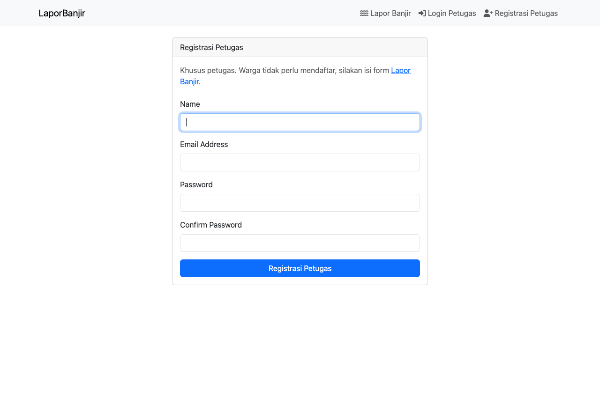
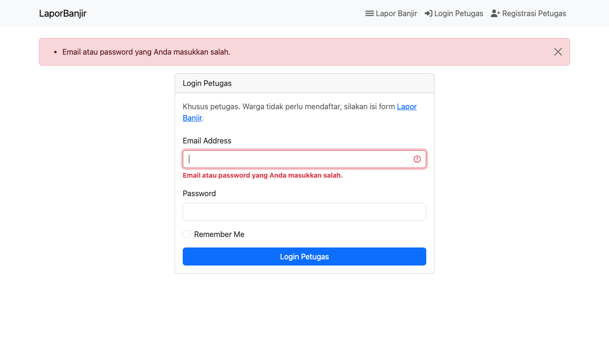
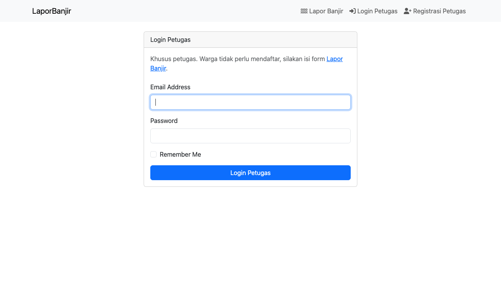
auth mencegah akses.login.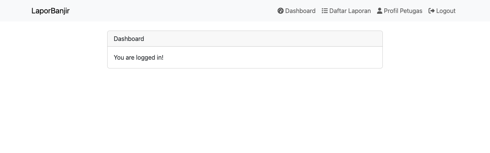
auth.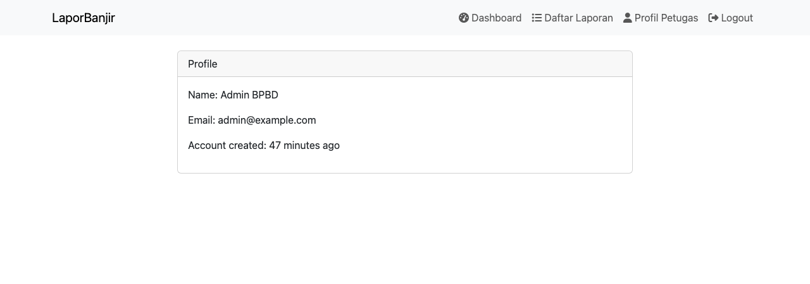
Auth::user().diffForHumans().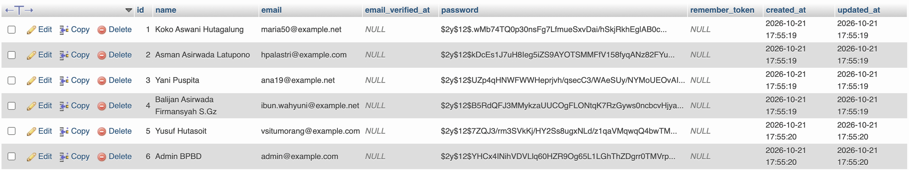
users melalui phpMyAdmin.Admin BPBD (admin@example.com).id, name, email, email_verified_at, password, remember_token, created_at, dan updated_at.password berisi hash bcrypt $2y$12$...; password asli tidak ditampilkan.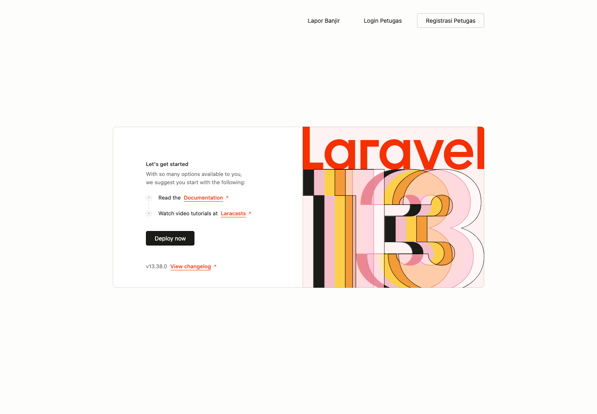
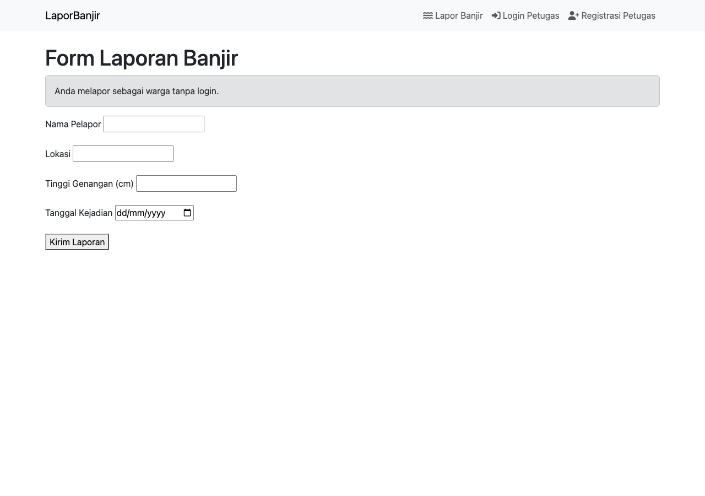
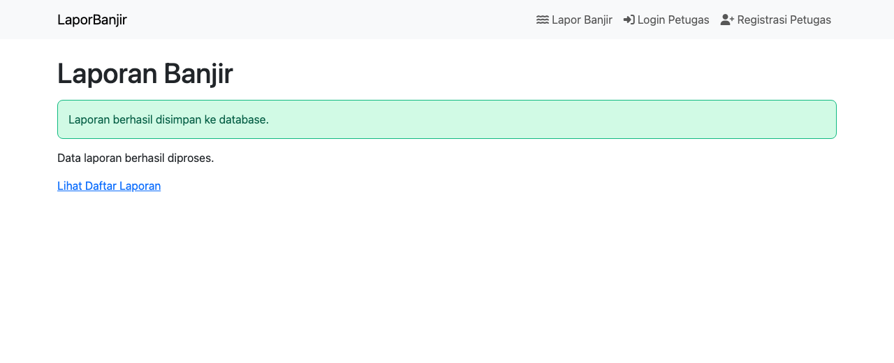
laporan.x-alert.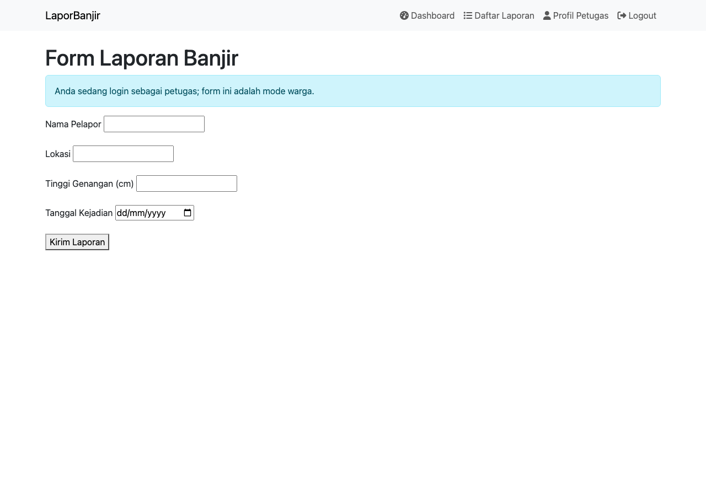
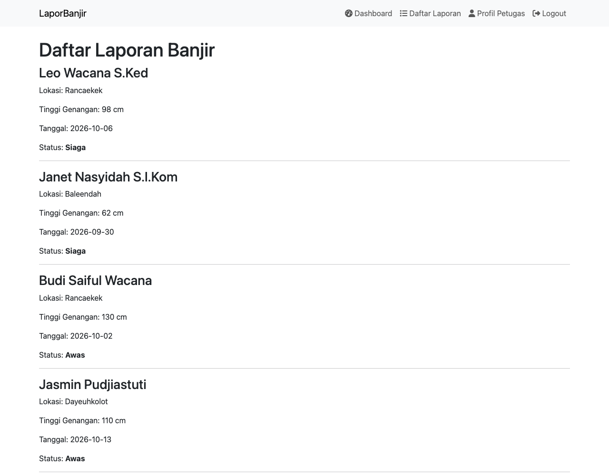
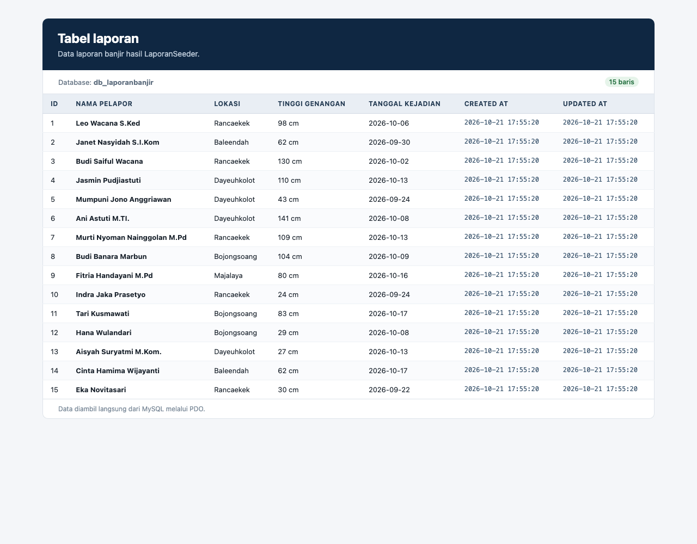
laporan dari database db_laporanbanjir.LaporanSeeder.id, nama_pelapor, lokasi, tinggi_genangan, tanggal_kejadian, created_at, dan updated_at.Sebelum authentication diterapkan, seluruh halaman dapat dibuka tanpa identitas pengguna. Setelah authentication diterapkan, aplikasi memiliki pembeda status guest dan petugas yang login.
| Aspek | Sebelum Authentication | Sesudah Authentication |
|---|---|---|
| Status pengguna | Semua pengunjung dianggap sama. | Guest dan petugas dibedakan. |
| Akun | Tidak ada akun petugas. | Akun tersimpan di tabel users. |
| Login | Tidak ada proses login. | Login memakai email dan password. |
| Session | Tidak ada status login. | Status login disimpan di session. |
| Menu | Menu belum berubah berdasarkan status. | Menu guest dan petugas berbeda. |
| Dashboard | Dapat dibuka siapa saja. | Hanya dapat dibuka setelah login. |
| Profil | Tidak ada halaman profil pengguna. | Profil menampilkan data petugas yang login. |
| Daftar laporan | Dapat diakses tanpa pembatasan. | Dilindungi middleware auth. |
| Logout | Tidak ada proses logout. | Session dihapus dan pengguna kembali menjadi guest. |
Perubahan utama terlihat pada navigasi dan akses halaman. Guest tetap dapat mengirim laporan melalui form publik, tetapi halaman pengelolaan laporan hanya tersedia untuk petugas yang sudah login.
Authentication pada project ini dibuat sepenuhnya secara manual:
User::create() dan Hash::make().Auth::attempt().Auth::logout(), invalidate(), dan regenerateToken().auth.Pendekatan manual membuat alur authentication terlihat jelas dan mudah dipelajari. Setiap langkah, mulai dari validasi, penyimpanan, pembuatan session, sampai logout, ditulis secara eksplisit.
| Aspek | Manual | Breeze |
|---|---|---|
| Pembuatan | Ditulis sendiri | Otomatis |
| Fitur | Sesuai kebutuhan | Lengkap |
| Pemahaman alur | Lebih jelas | Sebagian disembunyikan |
| Front-end | Bootstrap CDN | Tailwind dan Vite |
| Dependensi | Sedikit | Lebih banyak |
| Risiko konflik | Rendah karena terkontrol | Dapat menimpa route dan view |
Modul 6 membahas dua jalur: Breeze pada subbab 6.4.5 dan manual pada subbab 6.4.10. Untuk tugas LaporBanjir, modul secara khusus meminta authentication manual tanpa Breeze. Project ini mengikuti ketentuan tersebut agar alur validasi, hashing, session, dan middleware terlihat langsung. Breeze tidak dipasang sehingga tidak ada route atau view tambahan yang tidak digunakan.
SESSION_DRIVER=database, data session disimpan di tabel sessions.session()->regenerate() mencegah session fixation setelah login.invalidate() menghapus session saat logout.regenerateToken() mengganti token CSRF setelah logout.Hash::make() menghasilkan hash bcrypt.Auth::attempt() mencocokkan password dengan hash.$2y$.Hash::make() agar akun dummy dapat login.auth melindungi dashboard, profil, dan daftar laporan.login.login wajib memiliki nama login agar redirect bekerja.guest.guest dapat menjadi pengembangan berikutnya agar pengguna yang sudah login tidak membuka form login lagi.Halaman dashboard, profil, dan daftar laporan dipilih sebagai halaman wajib login karena berisi fungsi pengelolaan internal petugas:
Sebaliknya, halaman awal dan form Lapor Banjir tetap publik karena warga harus dapat melapor tanpa membuat akun. Dengan pembagian ini, akses warga tetap mudah, tetapi data pengelolaan tidak terbuka untuk umum.
unique() mencegah email duplikat.Hash::make() memastikan akun dummy memiliki password yang valid.LaporanSeeder menghasilkan 15 laporan untuk menguji halaman daftar.DatabaseSeeder memastikan kedua seeder dijalankan dalam satu perintah.laporan.auth.Pembedaan saat ini berada pada tingkat tampilan dan akses halaman:
Namun, pembedaan ini belum sepenuhnya ditegakkan pada tingkat data dan hak akses:
users belum memiliki kolom role.laporan belum memiliki user_id atau jenis_pelapor.Jika ingin pembedaan yang lebih kuat, pengembangan berikutnya dapat menambahkan:
role pada tabel users (warga atau petugas).user_id atau jenis_pelapor pada tabel laporan.| Kendala | Penyebab | Solusi |
|---|---|---|
| Koneksi database gagal | MySQL belum aktif atau port salah | Jalankan MySQL dan gunakan port 3307. |
| Status login tidak bertahan | Tabel sessions tidak ada |
Jalankan migration. |
419 Page Expired |
Token CSRF tidak dikirim atau session berubah | Pastikan @csrf ada dan gunakan session yang sama. |
Route [login] not defined |
Route login tidak diberi nama | Tambahkan ->name('login'). |
| Login gagal | Password tidak di-hash | Gunakan Hash::make(). |
| Email duplikat | Seeder dijalankan berulang | Gunakan email unik atau reset database. |
| Data uji tertinggal | Proses pengujian membuat akun/laporan baru | Hapus data uji setelah pengujian. |
| Tautan daftar laporan tidak dapat dibuka warga | Halaman dilindungi middleware auth |
Login sebagai petugas terlebih dahulu. |
@csrf pada setiap form.POST untuk logout..env ke repositori.APP_DEBUG=false pada produksi.Hash::make() menjaga password tetap aman.Auth::attempt() memverifikasi kredensial pengguna.auth melindungi dashboard, profil, dan daftar laporan.sessions tersedia.